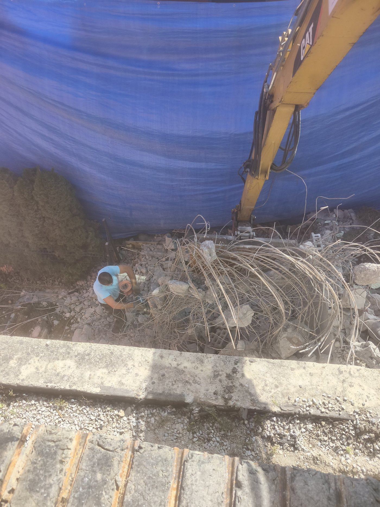
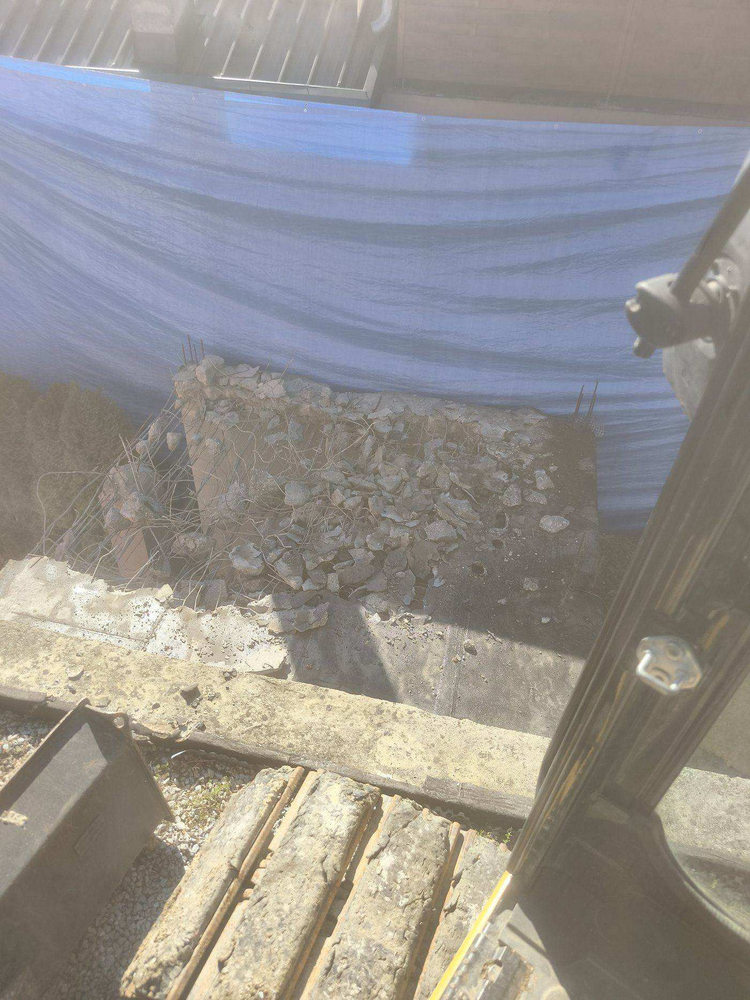
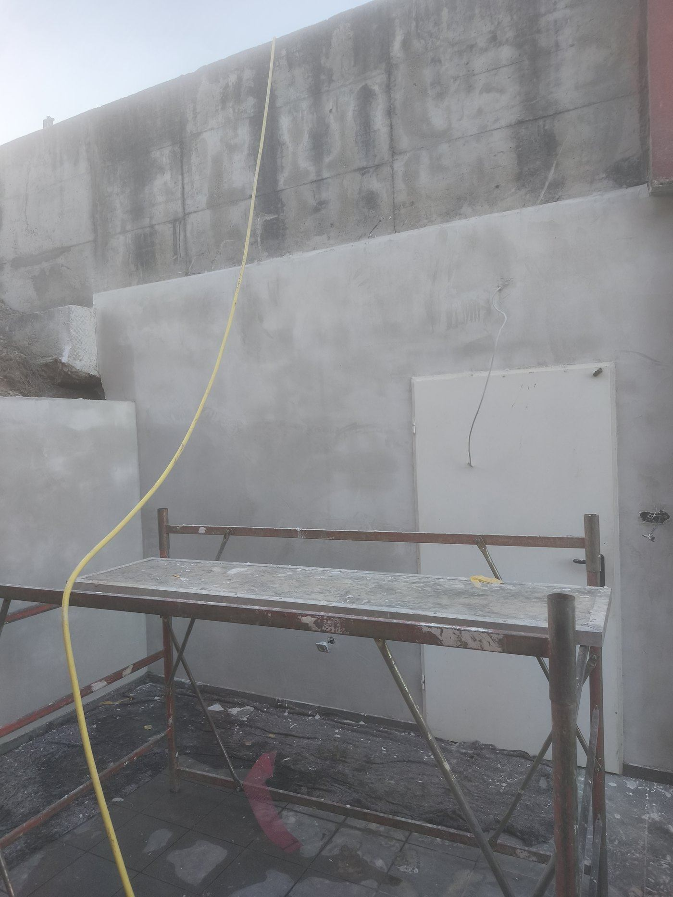
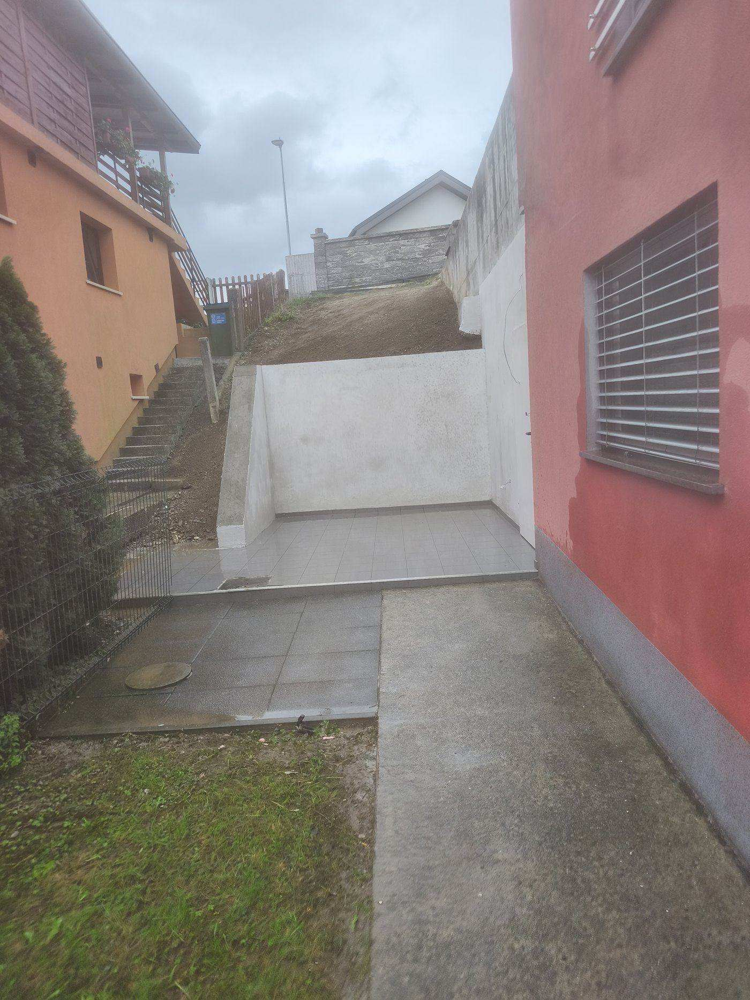

Prenove in adaptacije v Mariboru
Iz dotrajanega prostora do urejenega doma – celovite prenove stanovanj in hiš.

Celovite prenove z eno ekipo
Prenove izvedemo od rušitve do zaključne obdelave, tako da vam ni treba usklajevati več različnih obrtnikov. Poskrbimo za red na gradbišču in za dogovorjene roke. Prenavljamo stanovanja v mariborskih blokih (Tabor, Nova vas, Tezno) in starejše hiše v okolici.
- Rušitvena dela in odstranitev starih oblog
- Nove predelne stene in premik odprtin
- Ometi, estrihi in izravnave
- Prenova kopalnic in sanitarij
- Komplet adaptacije stanovanj in hiš
Pred in po
Od izpraznjenega prostora do urejenega doma.



Potek prenove in adaptacije v Mariboru
Prenovo stanovanja ali hiše v Mariboru izpeljemo z eno ekipo – od rušitvenih del do zaključne obdelave.
- Ogled, popis obstoječega stanja in načrt prenove
- Rušitvena in pripravljalna dela ter odvoz materiala
- Nove vodovodne, kanalizacijske in elektro instalacije
- Estrihi, izravnave, suhomontaža in ometi
- Polaganje ploščic, slikopleskarska in zaključna dela
Koliko stane prenova stanovanja v Mariboru?
Cena adaptacije je odvisna od obsega del, starosti in stanja objekta, morebitnih skritih napak, ki se pokažejo med rušenjem, ter standarda izbranih materialov. Po ogledu na lokaciji v Mariboru pripravimo pošteno oceno del in predlagamo smiseln vrstni red prenove.
Povprašajte za ponudboPogosta vprašanja
Ali lahko prenovite samo del hiše, npr. kopalnico?
Kako poteka prenova starejše hiše?
Koliko stane prenova ali adaptacija v Mariboru?
Prenova stanovanja ali hiše?
Pokličite ali pišite in dogovorimo se za ogled ter oceno del.